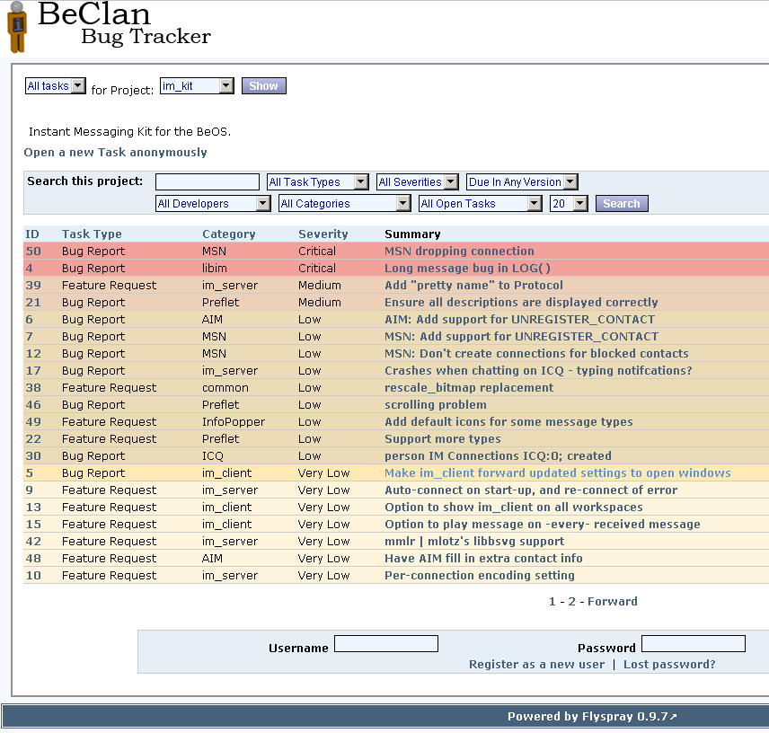

The Instant Messenger
Reporting Bugs
We like to belive that our code is bug free. This is probably as far from the truth as it can get. There are bugs in the IM kit, and many of them have actually been found of our users.
We find it highly motivating to get reports from our users. It shows that there are actually people using the solution and that wants help us getting it better.
BeClan is hosting our Bug Tracker. The Flyspray bug tracking solution is known to be one of the easiest ones available, so there are no excuse for you not to report the bugs you run in to.

If you have a fix for a bug, please send it to our mailinglist - imkit@beclan.org, so that we can evaluate the code and upload it to the source tree.